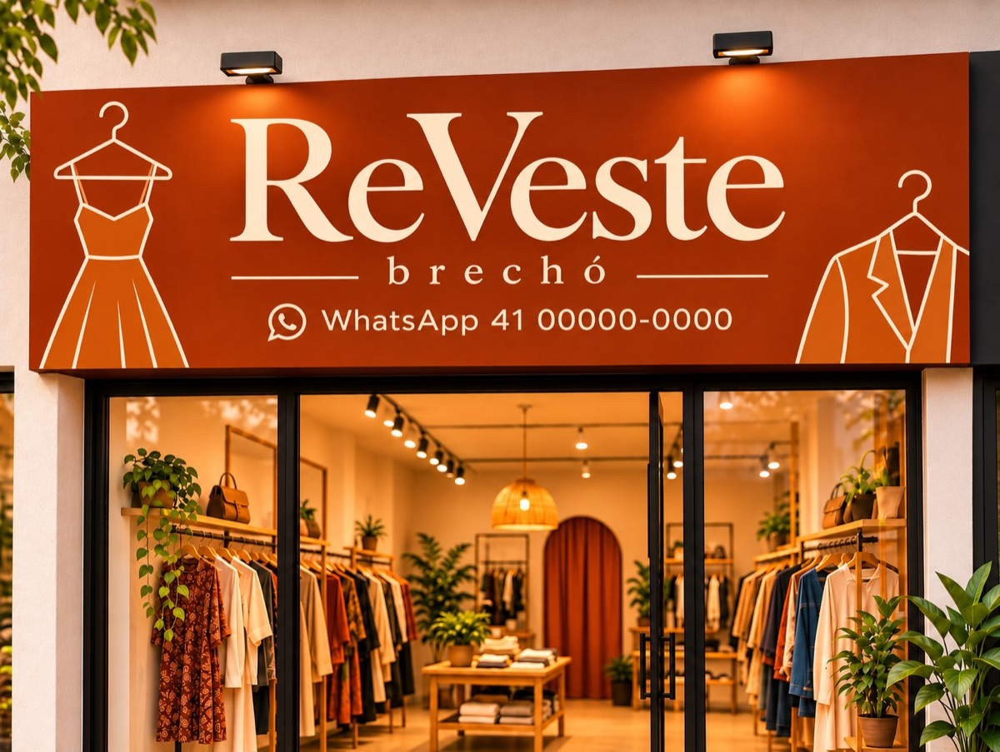
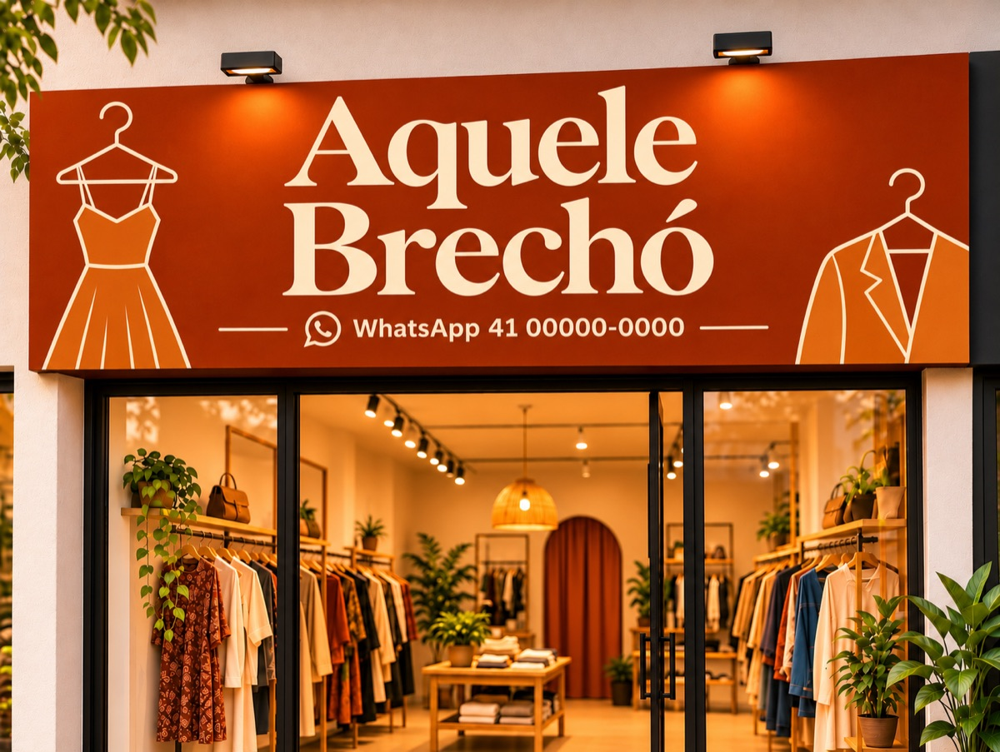
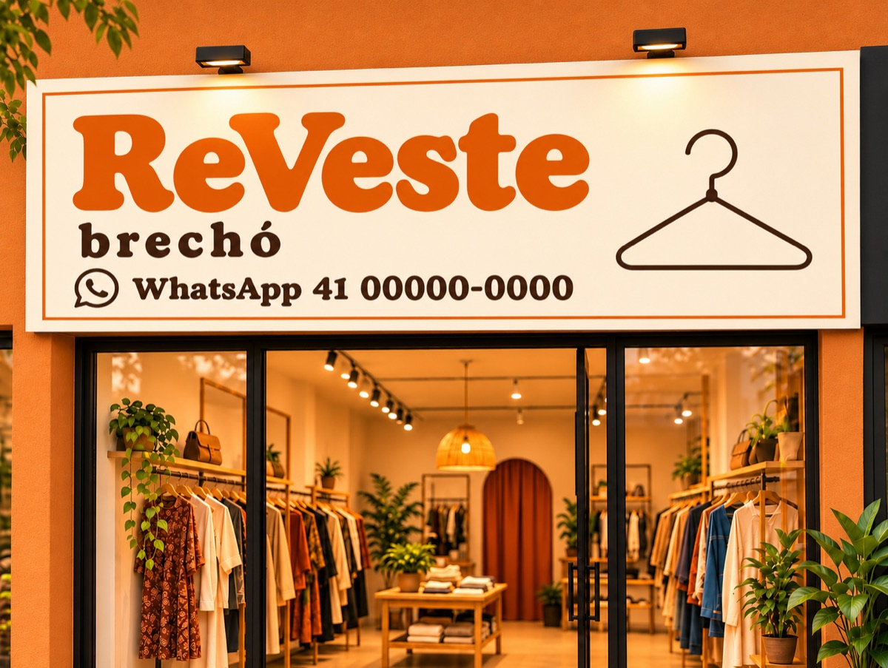
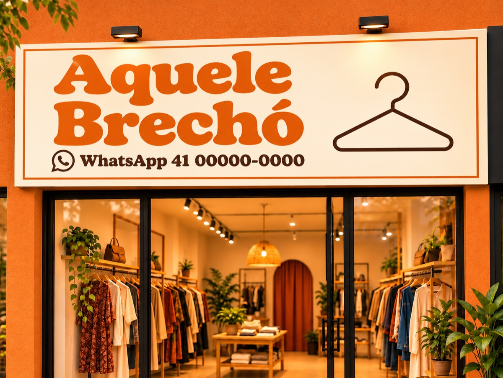
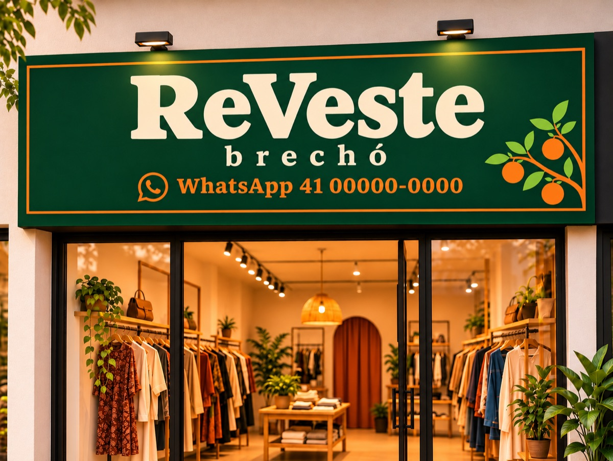
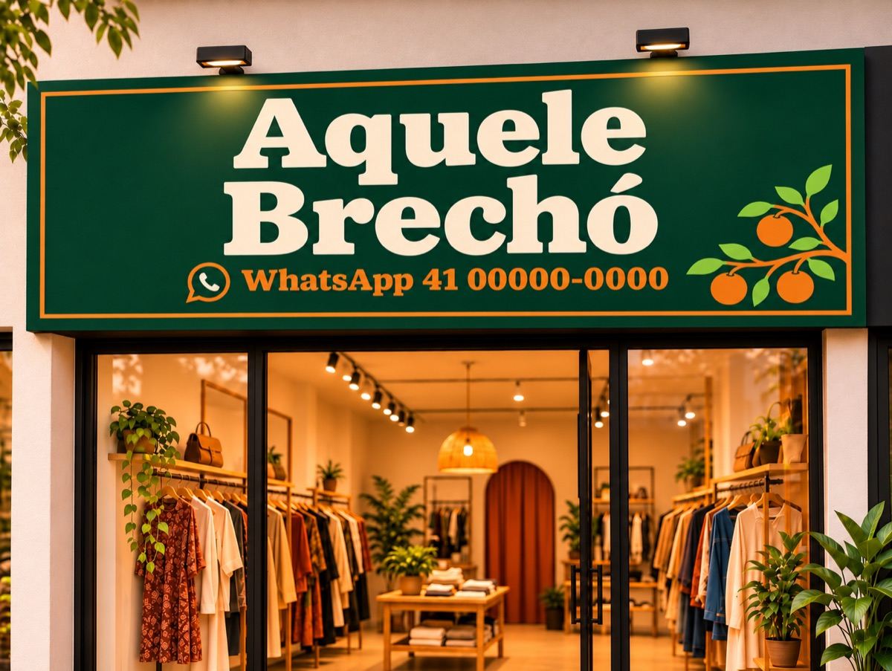
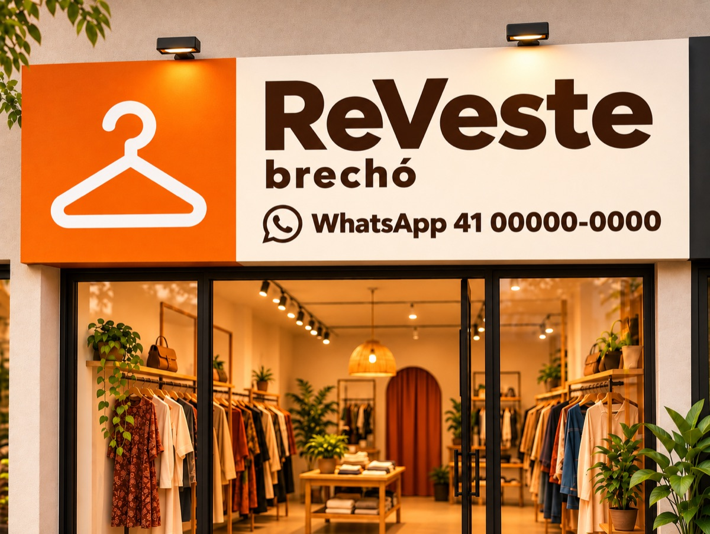
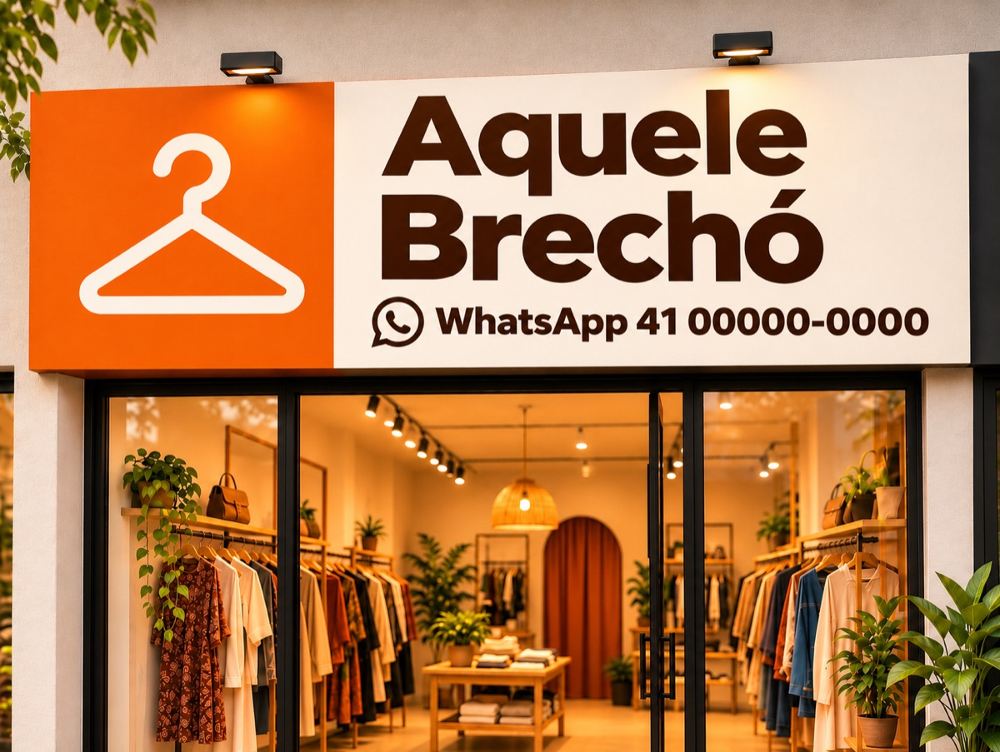

Terracota clássico


- A favor
- É o estilo das referências que a Salete gostou. Elegante e acolhedor.
- Cuidado
- Letra fina some de longe. Engrossar na arte final.
Dois nomes, quatro estilos de placa. Toque no nome para ver cada um nas quatro fachadas.








A loja e o interior das imagens são ilustrativos. O número de WhatsApp é fictício.